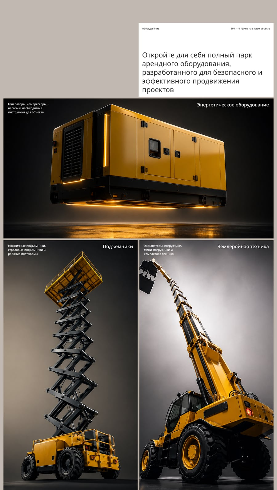
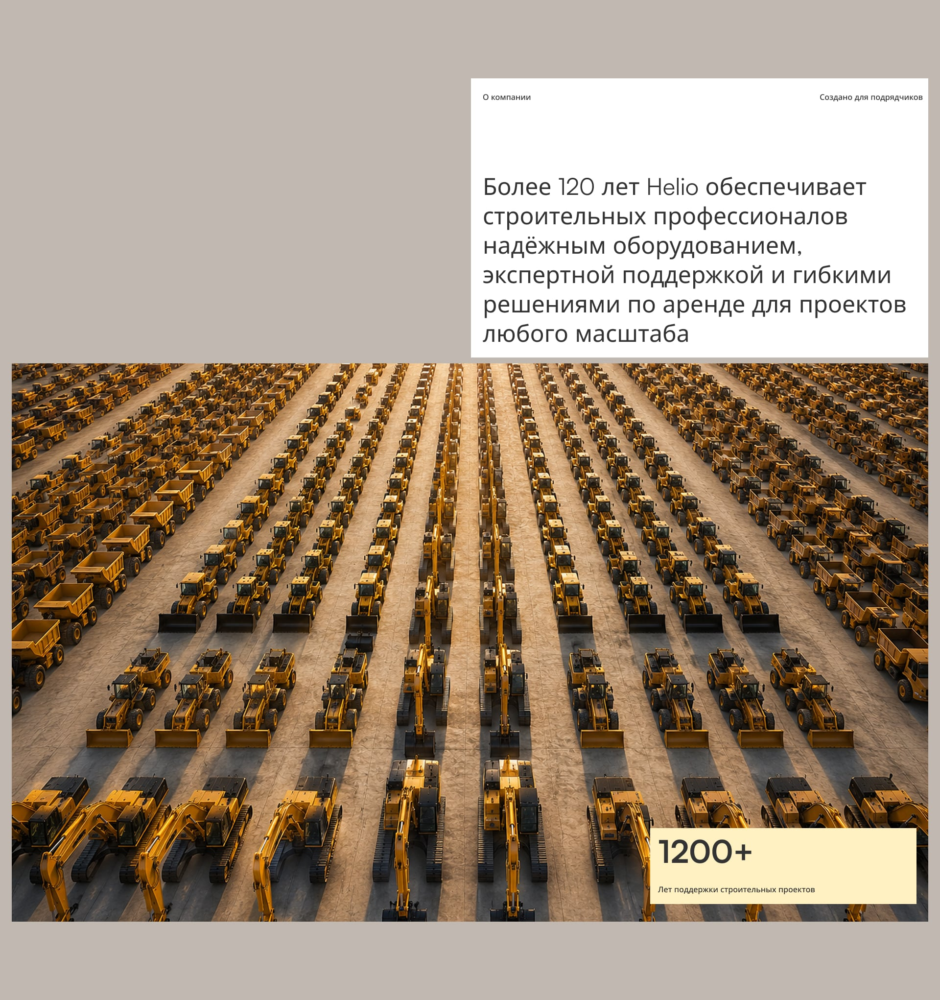
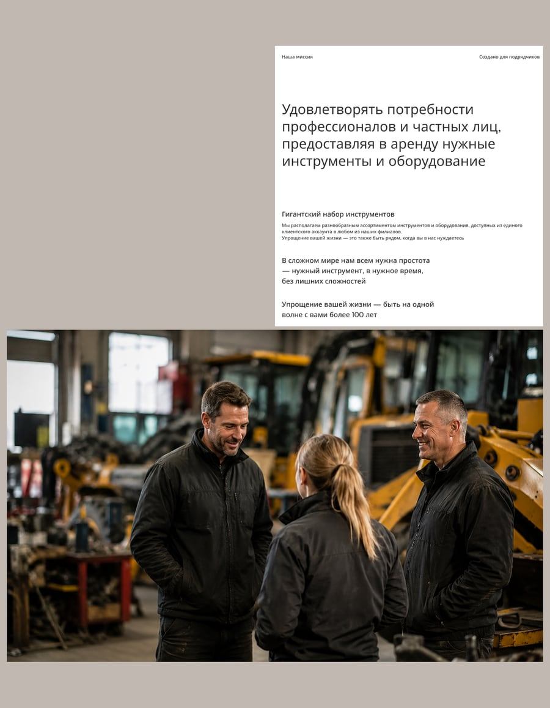
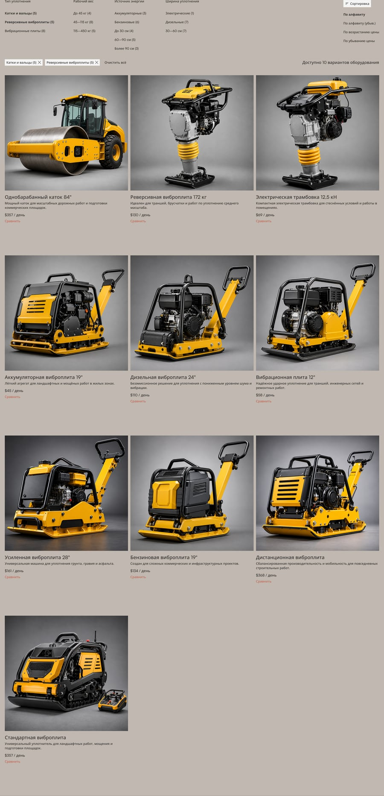
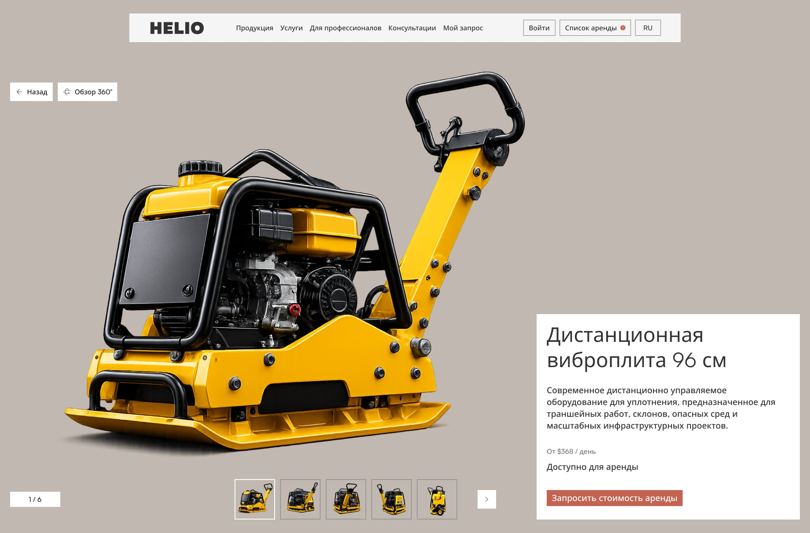
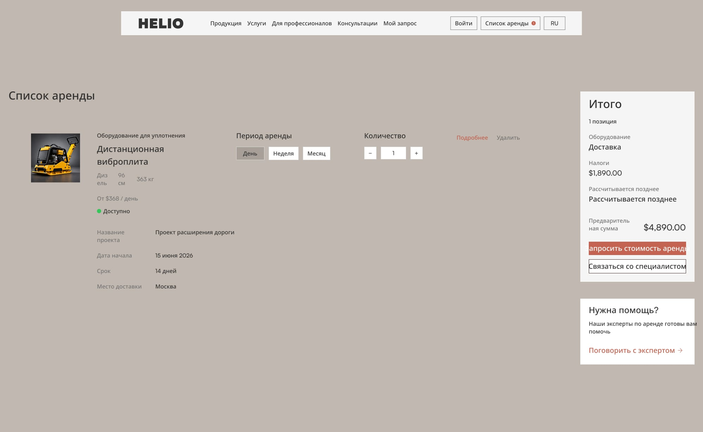

О проекте
Helio — исследование того, каким может стать современный цифровой сервис аренды строительной техники.
Большинство существующих решений ориентированы на каталоги и технические характеристики, но редко уделяют внимание качеству пользовательского опыта и визуальной презентации оборудования.
Проект исследует альтернативный подход, в котором техника становится главным продуктом интерфейса, а процесс аренды становится более понятным и удобным.
Дизайн-решение
Большинство сайтов аренды техники построены вокруг каталогов и технических данных. Несмотря на широкий выбор оборудования, пользовательский опыт часто оказывается перегруженным и сложным для восприятия.
Основные проблемы:
- сложная навигация;
- устаревшая визуальная подача;
- перегруженные карточки оборудования;
- слабая продуктовая презентация.
Цель
Переосмыслить опыт аренды техники через продуктовый подход, где оборудование становится главным элементом интерфейса.
Основные задачи:
- упростить поиск техники;
- улучшить процесс принятия решений;
- повысить качество визуальной презентации;
- создать ощущение современного промышленного бренда.
Design Direction
Product First
В основе лежит идея воспринимать строительную технику не как запись в каталоге, а как полноценный продукт. Поэтому ключевое внимание уделяется:
- изображениям оборудования;
- визуальной иерархии;
- техническому контенту;
- контексту использования техники.
Industrial Aesthetic
Визуальная система вдохновлена современной промышленной фотографией, инженерной эстетикой и архитектурными формами. Основные принципы:
- минимализм;
- крупные изображения;
- нейтральная палитра;
- акцент на деталях оборудования.
Homepage
Equipment Discovery
Главная страница знакомит пользователя с экосистемой оборудования и сервисов компании.
Основная цель — быстро показать масштаб парка техники и ключевые направления бизнеса.


Values & Mission
Human Behind The Equipment
Помимо техники важную роль играет команда компании.
Раздел ценностей раскрывает экспертизу сотрудников и подчеркивает, что за каждым проектом стоит команда специалистов.

Product Catalog
Simplified Equipment Discovery
Каталог был переработан таким образом, чтобы пользователи могли быстрее находить подходящее оборудование и сравнивать варианты.
Особое внимание уделено:
- структуре категорий;
- фильтрации;
- единообразию карточек;
- визуальной подаче техники.

Product Experience
Product as the Hero
Страница оборудования строится вокруг крупной визуальной презентации техники.
Структура помогает ответить на три вопроса:
- Что это?
- Подходит ли оно для моей задачи?
- Как его арендовать?

Technical Visualization
Для демонстрации инженерной составляющей были созданы детализированные технические визуализации и close-up изображения ключевых механизмов.
Это помогает раскрыть качество и устройство оборудования без перегрузки пользователя технической документацией.
Rental Flow
Rental List
Вместо традиционной корзины была предложена концепция Rental List — списка оборудования для будущего проекта.
Такой сценарий ближе к реальному процессу работы подрядчиков и проектных команд.
Пользователь может:
- сохранять оборудование;
- формировать проектные списки;
- сравнивать варианты;
- отправлять запрос на аренду.

Результат
Rental List — ключевое отличие от типового каталога аренды техники: вместо разовой корзины пользователь формирует список оборудования под конкретный проект, ближе к тому, как реально работают подрядчики, а не к логике e-commerce.
Карточка оборудования отвечает на три конкретных вопроса — что это, подходит ли для задачи, как арендовать — вместо перечисления технических характеристик. Индустриальная визуальная система переносит акцент с текста на сам продукт.
Кейс сильнее в части визуальной и продуктовой презентации, чем в проверке гипотез — это скорее дизайн-эксперимент с новым сценарием, чем валидированное решение измеренной проблемы.